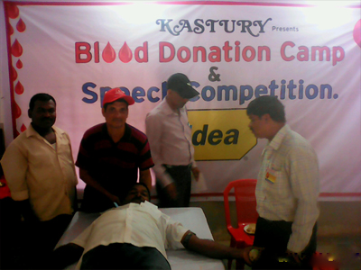

KASTURY comes to help for these patients by running first of its kind Phone Blood Helpline from 8 AM to 8 PM, 365 days in the year. Patients, their care takers or the Blood Bank officials can call our helpline numbers at +91 9337126073 to register the request. They provide the details of the patients and we try to fulfil the need within 2 hours of receiving the call by connecting to the nearest Emergency Blood Donor from that hospital.
This is our dream project and we are committed to fulfill this mission.
The idea is to create the largets human chain of “EMERGENCY BLOOD DONORS” who will always be ready to donate blood in any emergency. Our helpline numbers are with various hospitals in order to give timely help to the patient if they don’t have stock of a particular group.
